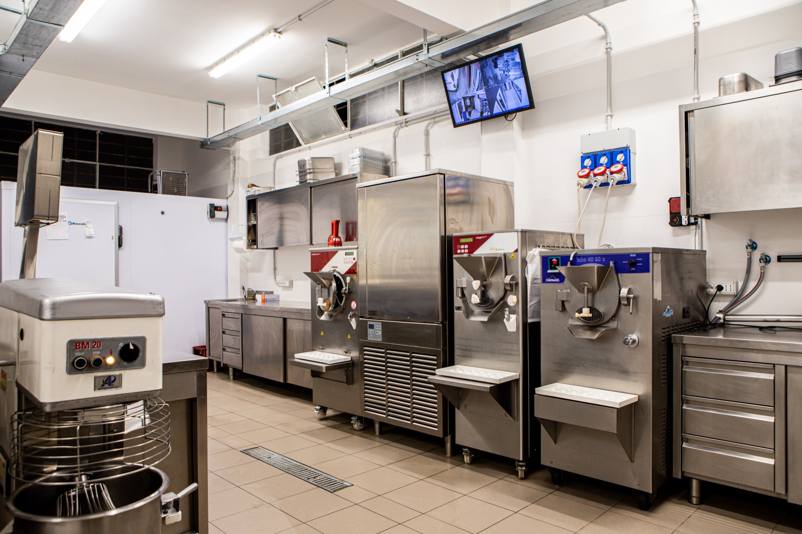

La nostra filosofia è quella di realizzare e proporre un prodotto ricco, genuino e naturale eseguito secondo i
più rigorosi canoni dell’artigianalità e soprattutto preparato con le materie prime che il mercato può offrire. Il
gelato viene ‘mantecato’ fresco ogni giorno presso il nostro laboratorio.
Il nostro gelato è preparato solo con latte e panna freschi di alta qualità prodotti in stalle selezionate delle
campagne siciliane ed in quantità limitata, secondo i più elevati standard qualitativi.
Tutto questo per proporvi un prodotto unico ed insostituibile per qualità, genuinità e freschezza

Via del Girasole, 19 - 95100 Catania